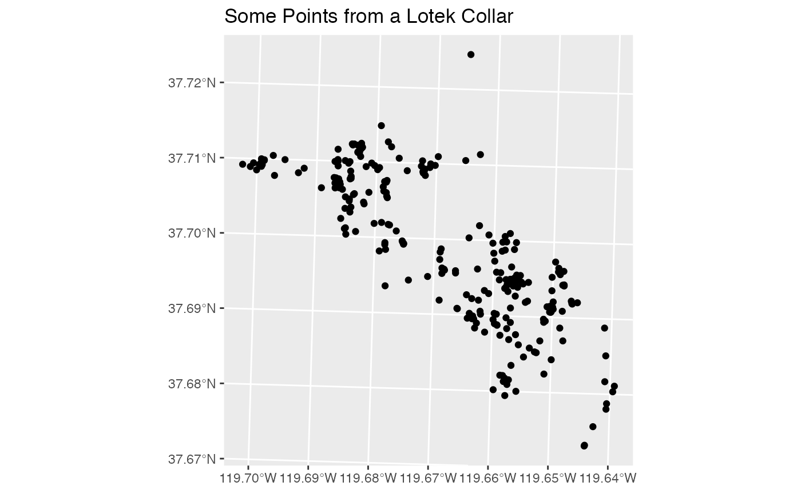

Getting Started
Help I have no idea what to do
This document goes over what data we need to assemble a database. It is likely that you have this data already, but it may not be in the correct formats. The goal here is to give the user an idea of a principled way to organize their data. Unfortunately, assembling, formatting, and organizing data are not steps that can be automated.
The example files here are all part of the package, so they live in subdirectories of:
# not evaluated because it illustrates a directory on author's machine:
system.file("", package = "beastr")And the directory structure therein represents one (of many) possibly ways to structure your data directories.
If you run this document from the .Rmd source, all the code sections like the above can be run on your computer. Some sections, like the above are specified not to automatically evaluate.
If you would like more information about RMarkdown, or just R in general, please see the vignette on learning R.
Motivation
Why would I bother?
Why does anyone need a database? What data goes in here? I will briefly try to answer those questions here.
Wildlife telemetry data is collected from placing devices in the field or directly on subject animals. These devices record data such as GPS fixes, activity logs, photos, etc.
We want to store and access not only information recorded by these devices, but information intrinsic to the devices (serial #, weight, etc) and the animals themselves (species, age, zodiac sign, etc). To maintain data validity, we can use separate tables to store each type of data, and then link those tables together for our analyses. This prevents us from having to do things like having to store all the information about Ricky the Weasel (eg. Favorite Food: Squirrel) on each of the twenty thousand records from the accelerometer on his collar.
The principle of storing each piece of information only once is called atomicity and is key in preventing data mismatches as records are added or changed.
For more motivation, please see the book that inspired this design: Spatial Database for GPS Wildlife Tracking Data https://doi.org/10.1007/978-3-319-03743-1
And the basic principles of database theory: ACID
And lastly, while the database backend is admittedly tedious, it is essential for processing data, as in these guides:
- Telemetry Database Data Entry
- Wildlife Telemetry Quality Control
- Exploring Fisher Collar Data
Data Requirements
What am I even dealing with?
To build a new database, you will need to assemble the basic info as flat text files. This is the hardest part of the whole process, as it cannot be scripted.
Telemetry Data:
This guide deals with data from Lotek telemetry devices. The principles and architecture may be extended to other devices, but some new data parsing code will be required. This assumes you have data processed with Lotek software that can be saved in Lotek’s text file format.
These files are produced using Lotek’s proprietary software. They look like tab-delimitted text files, but there are some crucial differences. Let’s take a look at an example file:
# Example Lotek Telemetry data:
lotek_file = system.file("lotek/PinPoint33452.txt", package = "beastr")
readr::read_lines(lotek_file, n_max = 10)
#> [1] "Index Status Sats RTC-date RTC-time FIX-date FIX-time Delta(s) Latitude Longitude Altitude(m) HDOP eRes Temperature(C) Voltage(V)"
#> [2] " 1 Valid 4/4 21/11/23 21:38:46 21/11/23 21:38:47.183 1.183 37.67304 -119.64404 2191.00 2.1 0.2 11.5 3.85"
#> [3] " 2 Valid 4/4 21/11/23 21:45:23 21/11/23 21:45:24.383 1.383 37.67314 -119.64399 2191.00 2.3 0.3 8.5 3.85"
#> [4] " 3 NotEnoughSats 0/1 21/11/23 22:00:21 1.000 5.5 3.80"
#> [5] " 4 NotEnoughSats 0/2 21/11/23 22:11:51 0.960 11.5 3.80"
#> [6] " 5 NotEnoughSats 0/0 21/11/23 22:15:13 0.950 13.5 3.80"
#> [7] " 6 NotEnoughSats 0/0 21/11/23 22:35:13 0.880 15.0 3.80"
#> [8] " 7 NotEnoughSats 0/2 21/11/23 22:58:50 0.810 23.5 3.80"
#> [9] " 8 NotEnoughSats 0/1 21/11/23 23:00:22 0.800 23.0 3.80"
#> [10] " 9 NotEnoughSats 0/1 21/11/23 23:15:15 1.000 24.0 3.80"You may notice some small details that make this file slightly difficult. There are empty fields, but there is no dedicated delimiter to separate them. The date/time fields are not standard formats and no coordinate reference system is specified. Also there is crucial information (Device ID) only specified in the filename. If we want to use this data, import it to R with the read_lotek() function:
lotek_data = read_lotek(lotek_file)
head(lotek_data)
#> Simple feature collection with 6 features and 16 fields (with 4 geometries empty)
#> Geometry type: POINT
#> Dimension: XY
#> Bounding box: xmin: 266812.4 ymin: 4172829 xmax: 266817.1 ymax: 4172840
#> CRS: EPSG:32611
#> # A tibble: 6 × 17
#> device_id Index Status Sats `RTC-date` `RTC-time` `FIX-date` `FIX-time`
#> <chr> <int> <chr> <chr> <chr> <time> <chr> <time>
#> 1 33452 1 Valid 4/4 21/11/23 21:38:46 21/11/23 21:38:47
#> 2 33452 2 Valid 4/4 21/11/23 21:45:23 21/11/23 21:45:24
#> 3 33452 3 NotEnoughSa… 0/1 21/11/23 22:00:21 NA NA
#> 4 33452 4 NotEnoughSa… 0/2 21/11/23 22:11:51 NA NA
#> 5 33452 5 NotEnoughSa… 0/0 21/11/23 22:15:13 NA NA
#> 6 33452 6 NotEnoughSa… 0/0 21/11/23 22:35:13 NA NA
#> # … with 9 more variables: `Delta(s)` <dbl>, `Altitude(m)` <dbl>, HDOP <dbl>,
#> # eRes <dbl>, `Temperature(C)` <dbl>, `Voltage(V)` <dbl>, Ingest_Time <dttm>,
#> # geometry <POINT [m]>, time <dttm>Now we have tidy spatial data, and can do spatial manipulation with it.

Telemetry devices may have other sensors as well. An example of this is “activity” data. These records are records from the on-board accelerometer aggregated into a measure called Overall Dynamic Body Acceleration (ODBA). These records are recorded on a different schedule from the GPS fixes, so must be stored separately. Again, Lotek uses a file format that is almost a standard csv, but not quite, so we’ll need to use the function read_lotek_activity() from this package:
# Starts as 2 columns, switches to 3, doesn't parse:
system.file("lotek/activity33452.csv", package = "beastr") %>%
readr::read_delim(delim = ",", show_col_types = FALSE, n_max = 6)
#> Warning: One or more parsing issues, see `problems()` for details
#> # A tibble: 6 × 1
#> `Product Type: Litetrack RF-40`
#> <chr>
#> 1 Product ID: 33452
#> 2 Firmware Version: V8.107.0
#> 3 GMT Time,ODBA,Temperature [C]
#> 4 11/23/2021 9:40:00 PM,140,8.5
#> 5 11/23/2021 9:45:00 PM,10,7.0
#> 6 11/23/2021 9:50:00 PM,7,5.0
# Using beastr:
system.file("lotek/activity33452.csv", package = "beastr") %>%
read_lotek_activity()
#> # A tibble: 4,321 × 4
#> device_id time ODBA `Temperature [C]`
#> <chr> <dttm> <dbl> <dbl>
#> 1 33452 2021-11-23 21:40:00 140 8.5
#> 2 33452 2021-11-23 21:45:00 10 7
#> 3 33452 2021-11-23 21:50:00 7 5
#> 4 33452 2021-11-23 21:55:00 14 4.5
#> 5 33452 2021-11-23 22:00:00 7 4
#> 6 33452 2021-11-23 22:05:00 7 3.5
#> 7 33452 2021-11-23 22:10:00 96 7.5
#> 8 33452 2021-11-23 22:15:00 288 13
#> 9 33452 2021-11-23 22:20:00 405 19.5
#> 10 33452 2021-11-23 22:25:00 28 14
#> # … with 4,311 more rows{TODO}: Add support for more input file formats. This can be done as it becomes necessary with new devices. To preserve data, records with different fields for different types of devices should be stored in different tables. The crucial information is joined together into a single VIEW using the deployments table.
Device Data:
Beyond the data recorded by the telemetry devices, we also want to store information about the devices themselves. This includes things like the serial number, manufacturer, attachment type, etc. This is data tied to a device that does not vary between the individual samples recorded by the device.
This data does not automatically come from the device, so it needs to be manually assembled into one or more CSV/spreadsheets.
Here’s what an example looks like:
device_file = system.file("devices/collars.csv", package = "beastr")
readr::read_csv(device_file) %>% head(4)
#> Rows: 33 Columns: 7── Column specification ────────────────────────────────────────────────────────
#> Delimiter: ","
#> chr (5): Type, Make, Model, Antenna, Notes
#> dbl (2): ID, VHF
#> ℹ Use `spec()` to retrieve the full column specification for this data.
#> ℹ Specify the column types or set `show_col_types = FALSE` to quiet this message.
#> # A tibble: 4 × 7
#> ID Type Make Model Antenna VHF Notes
#> <dbl> <chr> <chr> <chr> <chr> <dbl> <chr>
#> 1 33465 collar Lotek LT40 Internal 169. NA
#> 2 33448 collar Lotek LT40 Internal 168. NA
#> 3 259181 collar Holohil MI-2M NA 169. NA
#> 4 259182 collar Holohil MI-2M NA 169. NAIn this case, we only have one list of devices. But if there were others that we wanted to combine, we could search for them using fs:
# Find all CSVs in the device directory:
device_dir = system.file("devices", package = "beastr")
fs::dir_ls(device_dir, regexp = "*.csv", recurse = TRUE)
#> /Library/Frameworks/R.framework/Versions/4.1/Resources/library/beastr/devices/collars.csvAnimal Data:
The whole reason we are doing this is to learn about animals. We need to store information about them! A lot of what we know about the animals does not come from a telemetry device, we need to compile it here.
Again, this will be one ormore flat CSV/spreadsheets.
Here’s what an example looks like, this time we’re reading multiple files in:
animal_dir = system.file("animals", package = "beastr")
animal_files = fs::dir_ls(animal_dir, regexp = "*.csv", recurse = TRUE)
readr::read_csv(animal_files)
#> Rows: 18 Columns: 5── Column specification ────────────────────────────────────────────────────────
#> Delimiter: ","
#> chr (5): ID, AgeClass, GeneralArea, Sex, Species
#> ℹ Use `spec()` to retrieve the full column specification for this data.
#> ℹ Specify the column types or set `show_col_types = FALSE` to quiet this message.
#> # A tibble: 18 × 5
#> ID AgeClass GeneralArea Sex Species
#> <chr> <chr> <chr> <chr> <chr>
#> 1 MF01 Adult Elevenmile F PEPE
#> 2 MF02 Subadult GPR F PEPE
#> 3 MF03 Subadult GPR F PEPE
#> 4 MF04 Adult Moss/ Hodgdon F PEPE
#> 5 MF04 Adult Moss/ Hodgdon F PEPE
#> 6 MF05 Adult Moss/Hazel Green F PEPE
#> 7 MF06 Subadult Valley F PEPE
#> 8 MM01 Adult Moss/Merced M PEPE
#> 9 MM02 Juvenile Summit M PEPE
#> 10 MM03 Juvenile Summit M PEPE
#> 11 MM04 Juvenile Summit M PEPE
#> 12 MM05 Adult South Gate M PEPE
#> 13 MM06 Adult Moss/Tuolumne M PEPE
#> 14 MM07 Subadult GPR M PEPE
#> 15 MM08 Adult Elevenmile M PEPE
#> 16 MM09 Adult Moss M PEPE
#> 17 MM10 Juvenile South Gate M PEPE
#> 18 MM11 Adult GPR M PEPEDeployment Data: Animal telemetry devices are deployed on animals, but some animals may have multiple devices, and devices often record data even when they are not deployed. In order to properly tie the various recorded data to their animals, we need to store deployment info. The key fields of this data are: device_id, animal_id, in_service, out_service. There are more fields, but those are the key to understanding the purpose of this data.
Again, this will be one or more flat CSV/spreadsheets.
Example:
deploy_file = system.file("deployments/deployments.csv", package = "beastr")
readr::read_csv(deploy_file)
#> Rows: 20 Columns: 6── Column specification ────────────────────────────────────────────────────────
#> Delimiter: ","
#> chr (3): AnimalID, Start_Method, Stop_Method
#> dbl (1): DeviceID
#> dttm (2): In_Service, Out_Service
#> ℹ Use `spec()` to retrieve the full column specification for this data.
#> ℹ Specify the column types or set `show_col_types = FALSE` to quiet this message.
#> # A tibble: 20 × 6
#> DeviceID AnimalID In_Service Out_Service Start_Method
#> <dbl> <chr> <dttm> <dttm> <chr>
#> 1 33468 MM02 2021-10-17 15:35:00 NA capture
#> 2 33467 MM03 2021-10-18 16:19:00 NA capture
#> 3 33454 MM04 2021-10-19 15:46:00 2022-01-13 13:08:00 capture
#> 4 33508 MM05 2021-10-31 13:32:00 2022-02-09 12:55:00 capture
#> 5 33456 MF01 2021-11-19 14:03:50 NA capture
#> 6 33452 MF02 2021-11-23 14:53:00 2021-12-08 13:35:00 capture
#> 7 33459 MF03 2021-11-24 14:31:00 2022-02-12 14:45:00 capture
#> 8 33469 MM07 2021-11-24 18:33:00 NA capture
#> 9 33507 MM08 2021-11-24 18:18:00 2022-03-05 13:26:00 capture
#> 10 33506 MM09 2022-01-22 13:41:00 NA capture
#> 11 33465 MF04 2022-01-13 15:15:00 2022-02-14 12:24:00 capture
#> 12 33448 MF05 2022-01-15 14:38:00 NA capture
#> 13 33512 MM06 2021-10-31 15:35:00 2022-01-16 13:52:00 capture
#> 14 33510 MM06 2022-01-16 15:01:00 NA capture
#> 15 33463 MF06 2022-01-27 13:47:00 2022-02-19 15:30:00 capture
#> 16 33504 MM05 2022-02-09 13:31:00 NA capture
#> 17 33982 MM04 2022-02-14 13:57:00 NA capture
#> 18 259186 MF04 2022-03-02 13:08:00 NA capture
#> 19 33983 MM08 2022-03-05 14:16:00 NA capture
#> 20 33984 MM11 2022-03-07 13:28:00 NA capture
#> # … with 1 more variable: Stop_Method <chr>{TODO}: Need to add a non-animal deployment table for environmental and ambient devices. This should be a spatial table.
Some telemetry devices may record environmental data (such as weather stations) or ambient data (like Acoustic Recording Units), and are not tied to a specific animal. [NOT YET IMPLEMENTED]
Building a Geopackage
Now that you understand the raw data formats, we can run the script in the README:
# Use example source data
fix_file = system.file("lotek/PinPoint33452.txt", package = "beastr")
device_file = system.file("devices/collars.csv", package = "beastr")
animal_file = system.file("animals/critters.csv", package = "beastr")
deploy_file = system.file("deployments/deployments.csv", package = "beastr")
activity_file = system.file("lotek/activity33452.csv", package = "beastr")
# Create a path to a geopackage in a temporary directory:
myDB = paste0(tempdir(check = TRUE), "/", "example.gpkg")
# Build a database
build_database(fix_files = fix_file,
device_files = device_file,
animal_files = animal_file,
deployment_files = deploy_file,
dsn = myDB,
tz = "US/Pacific")
#> Rows: 20 Columns: 6── Column specification ────────────────────────────────────────────────────────
#> Delimiter: ","
#> chr (3): AnimalID, Start_Method, Stop_Method
#> dbl (1): DeviceID
#> dttm (2): In_Service, Out_Service
#> ℹ Use `spec()` to retrieve the full column specification for this data.
#> ℹ Specify the column types or set `show_col_types = FALSE` to quiet this message.
#> Warning in clean_columns(as.data.frame(obj), factorsAsCharacter): Dropping
#> column(s) RTC-time,FIX-time of class(es) hms;difftime,hms;difftime
#> Warning: Missing values are always removed in SQL.
#> Use `MIN(x, na.rm = TRUE)` to silence this warning
#> This warning is displayed only once per session.
#> Warning: Missing values are always removed in SQL.
#> Use `MAX(x, na.rm = TRUE)` to silence this warning
#> This warning is displayed only once per session.
# What layers are in there?
sf::st_layers(myDB)
#> Driver: GPKG
#> Available layers:
#> layer_name geometry_type features fields crs_name
#> 1 fixes Point 468 14 32611
#> 2 animal_fixes Point 462 12 32611
#> 3 devices NA 33 7 <NA>
#> 4 animals NA 4 5 <NA>
#> 5 deployments NA 20 6 <NA>You may notice I forgot to import the activity files. Let’s do that now, as an example of adding an extra layer to an existing database:
activity_data = read_lotek_activity(activity_file)
append_layer(data = activity_data,
dsn = myDB,
layer = "activity")
#> Updating layer `activity' to data source `/var/folders/q2/53ffh3110_5fqqp7tmq2s5th0000gn/T//Rtmp8DSEiu/example.gpkg' using driver `GPKG'
#> Writing 4321 features with 4 fields without geometries.
# a new layer:
sf::st_layers(myDB)
#> Driver: GPKG
#> Available layers:
#> layer_name geometry_type features fields crs_name
#> 1 fixes Point 468 14 32611
#> 2 animal_fixes Point 462 12 32611
#> 3 devices NA 33 7 <NA>
#> 4 animals NA 4 5 <NA>
#> 5 deployments NA 20 6 <NA>
#> 6 activity NA 4321 4 <NA>